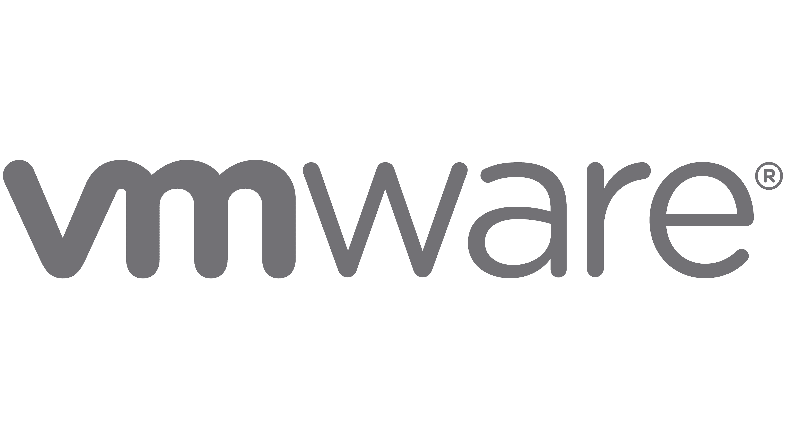

Compétences

Tel : +33 6.61.56.33.65
Née le 26 Mars 1993
Email : marion.borne@laplatforme.io
112 rue du Camas, 13005 Marseille
Conquise par le milieu de l’informatique et en reconversion professionelle.
Je souhaiterais intégrer votre équipe afin de me former aux métiers de la Cybersécurité.
Très motivée, tenace, organisée et avec une soif d’apprendre, je saurai devenir un atout dans votre équipe.
GERTRUDE + GASTON / Marseille - Avril 2018 - Juin 2023
Développement de deux collections par an de la création à la livraison :
Cozete / Marseille - Juin - Aout 2020
Réalisation de patronnage à plat et de prototypes
CHANEL Haute Couture / Paris - Sept 2013 - Juin 2015
Interprétation des croquis et réalisation des modèles de défilés
Moulage et confection sur mesure des commandes clients
Marseille - Septembre 2023 - Aujourd'hui
Bachelor IT - Spécialité Cybersécurité
1ère année généraliste :
Paris / 2013 - 2017
Formation en stylisme et modélisme Mastère I
CAP en alternance en Atelier Haute Couture
Saint-Cloud / 2008 - 2012
Baccalauréat Général Economique et Social